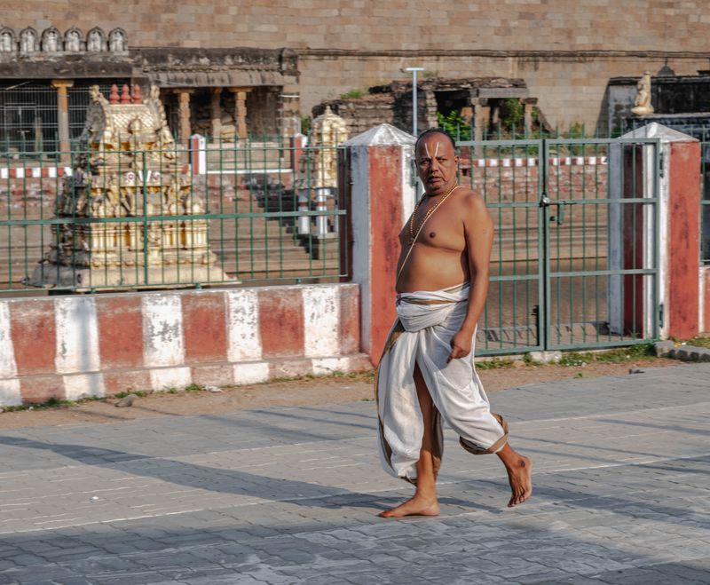
Pt. Ramesh Sharma
Verified18 yrs★ 4.9
Book Priest
Shubh Pooja
Our Priests
Choose from over 320 priests trained in Vedic traditions and available in your language.
Find a Priest

Verified18 yrs★ 4.9
Book Priest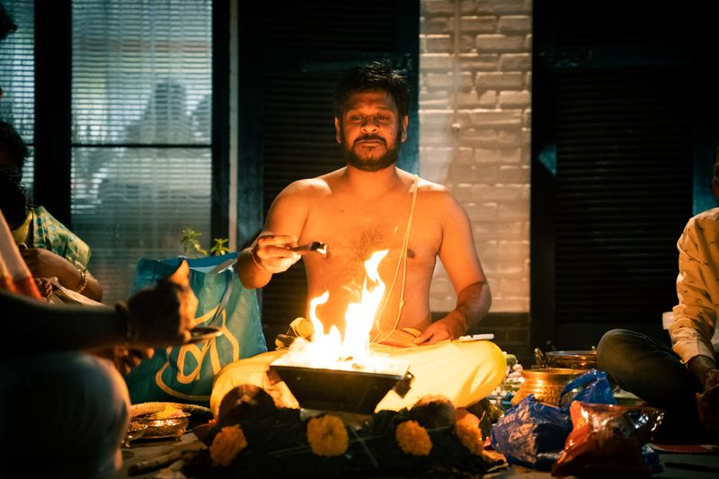
Verified22 yrs★ 4.9
Book Priest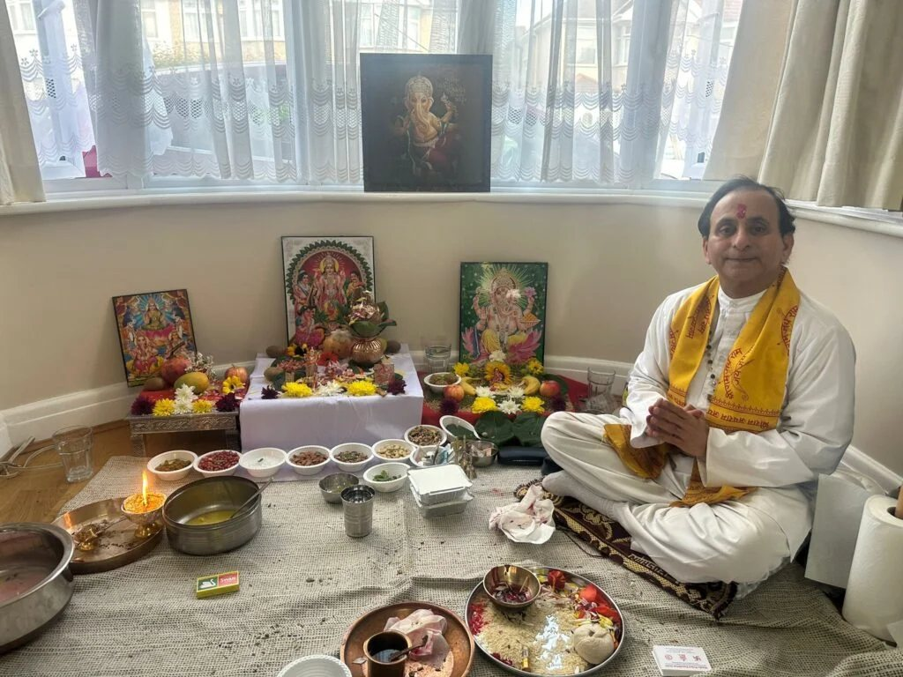
Verified15 yrs★ 4.8
Book Priest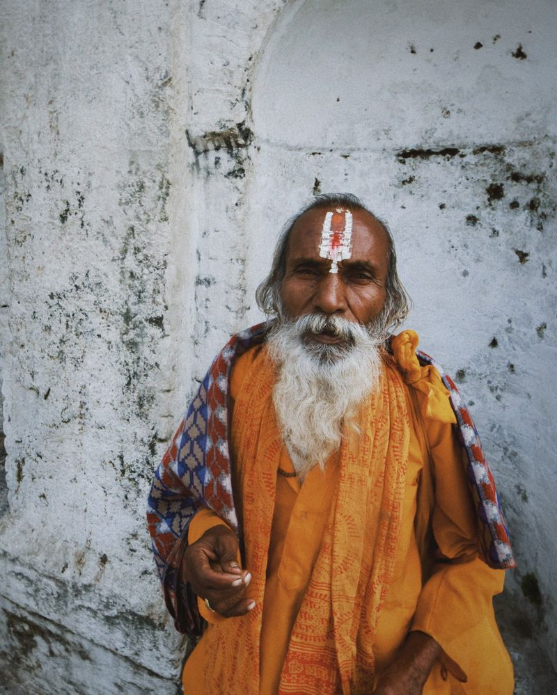
Verified20 yrs★ 4.8
Book Priest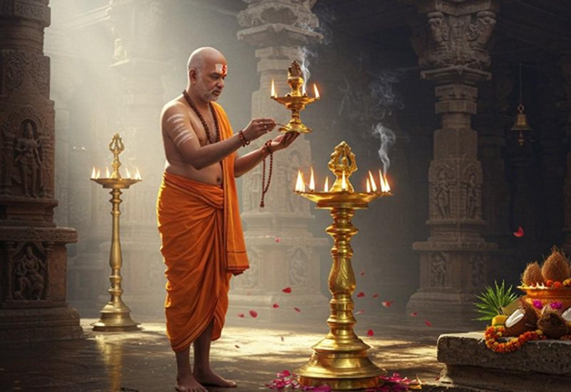
Verified17 yrs★ 4.7
Book Priest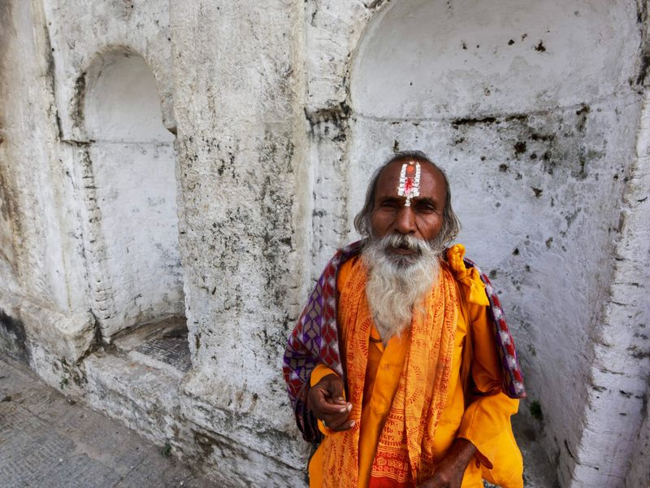
Verified25 yrs★ 4.9
Book Priest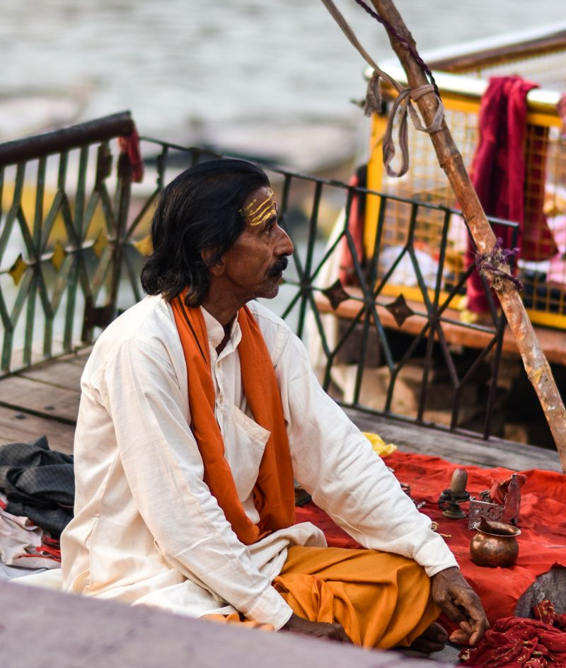
Verified19 yrs★ 4.7
Book PriestVerified14 yrs★ 4.8
Book Priest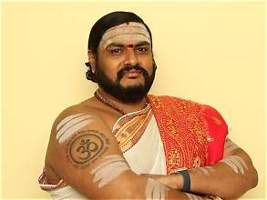
Verified16 yrs★ 4.8
Book Priest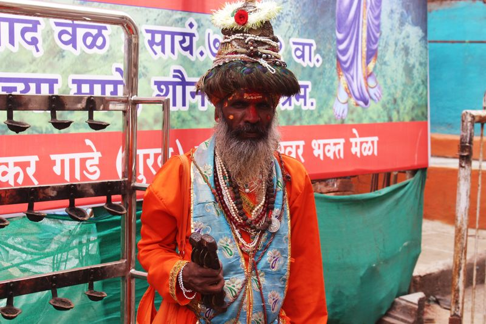
Verified23 yrs★ 4.9
Book Priest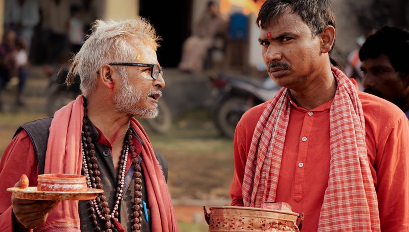
Verified12 yrs★ 4.7
Book Priest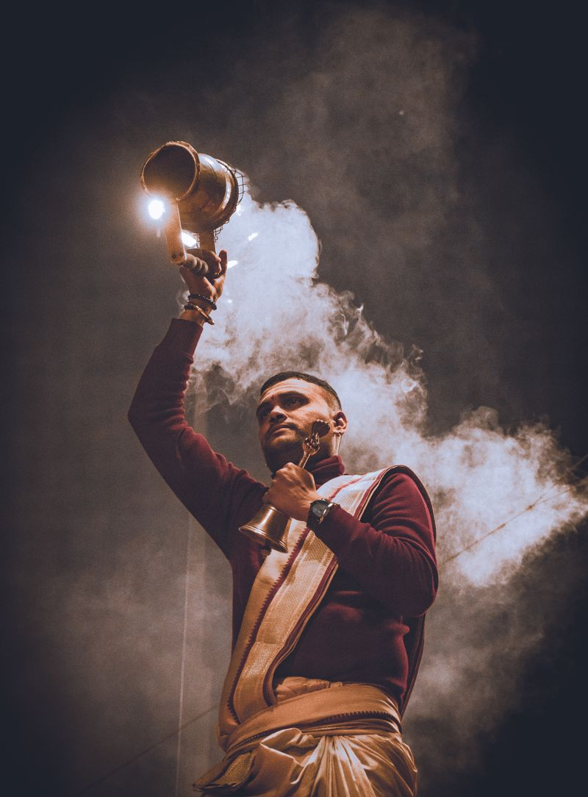
Verified21 yrs★ 4.8
Book Priest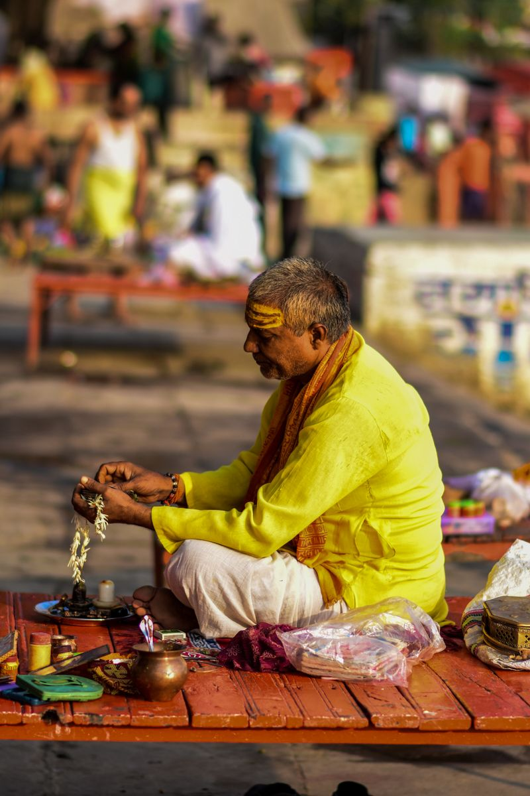
Verified28 yrs★ 4.9
Book Priest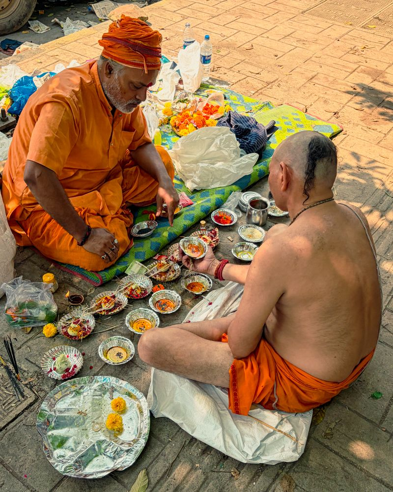
Verified18 yrs★ 4.8
Book Priest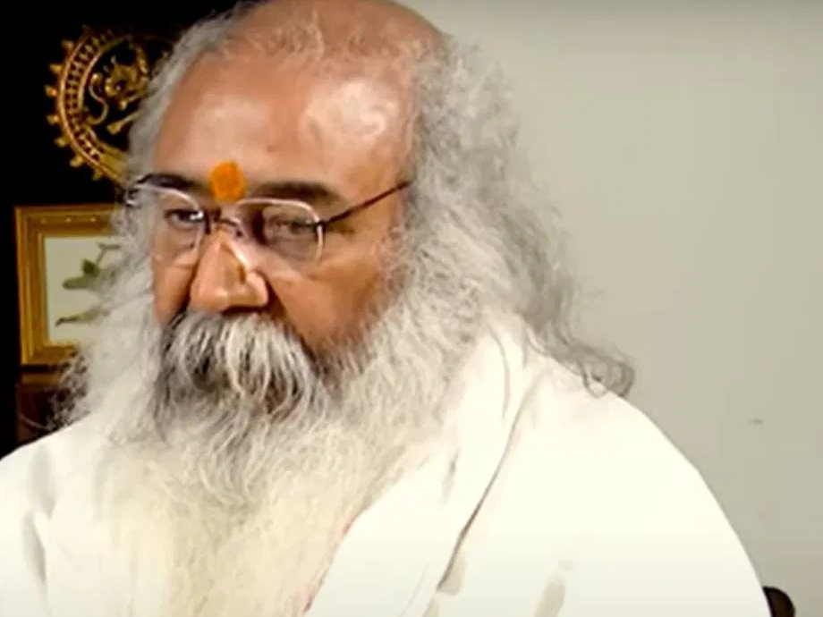
Verified24 yrs★ 4.7
Book Priest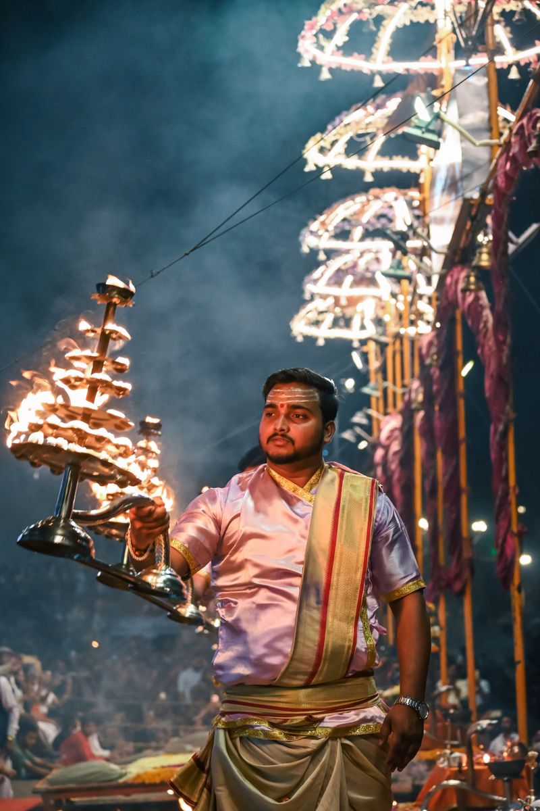
Verified15 yrs★ 4.7
Book PriestSpecialties
48 priests
36 priests
54 priests
Verification
Four checks stand between a priest and your doorstep, so every ceremony is led by someone you can trust.
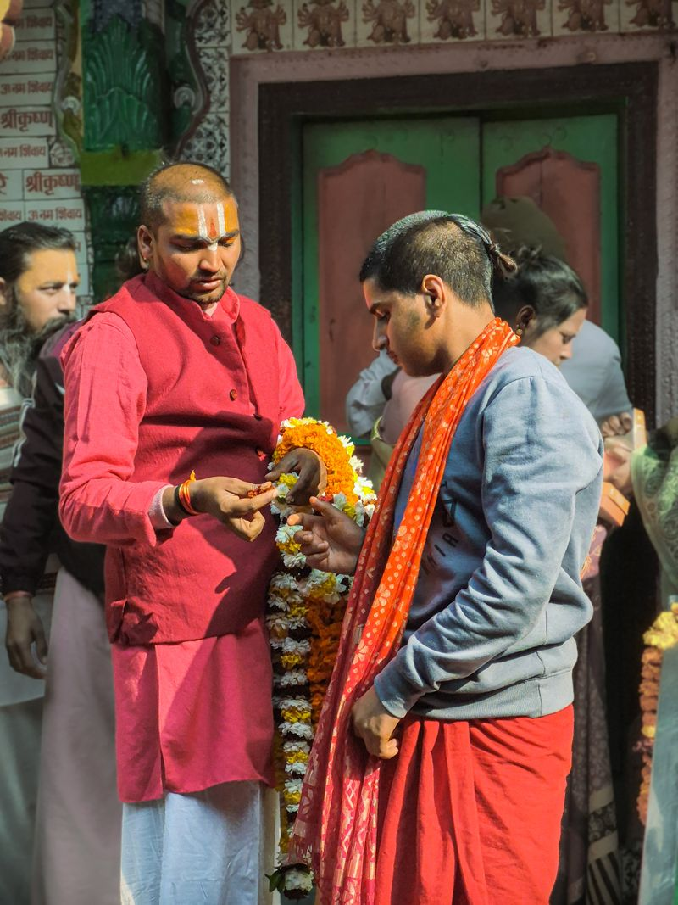
Vedic training certificates are checked.
A senior acharya assesses ritual knowledge.
Identity and conduct are verified.
Ongoing feedback keeps standards high.
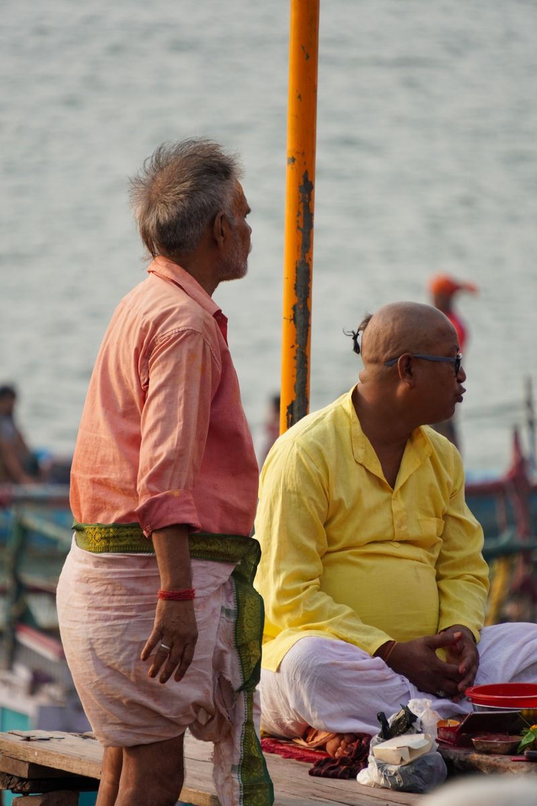
Languages
Our priests conduct ceremonies in Tamil, Telugu, Kannada, Malayalam, Hindi, Marathi, Bengali and Gujarati.